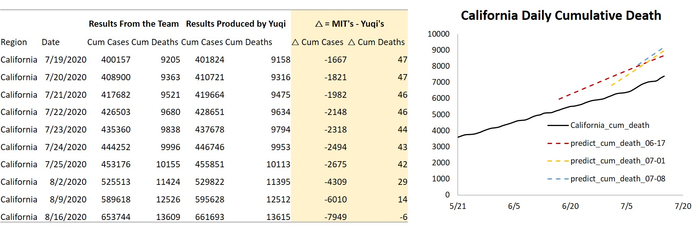
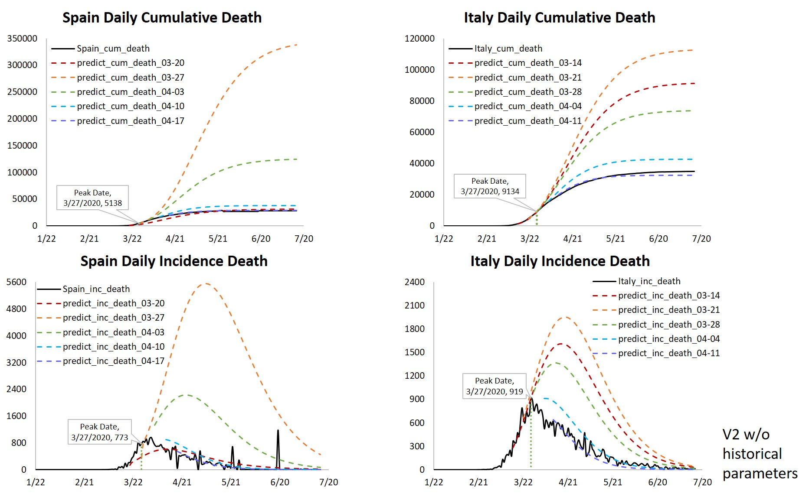
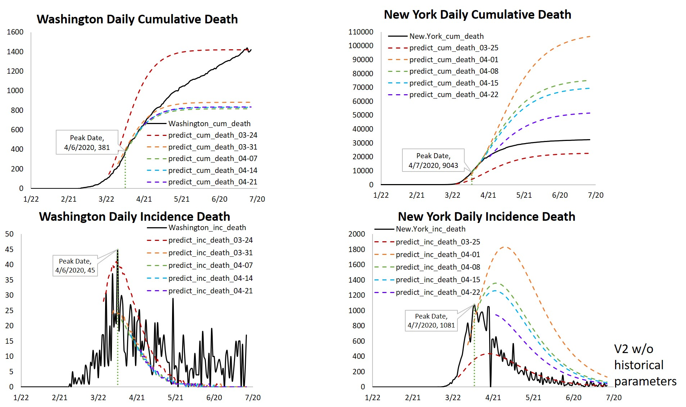
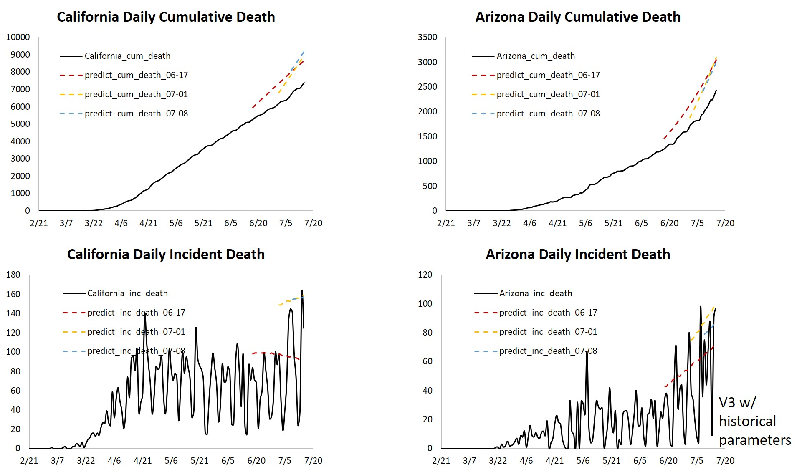

There is an increasing amount of forecasting models regarding COVID-19 cases or deaths. However, to what degree theses models are reliable and how can we make use of these models remain to be questions. We believe that there are three major factors we need to consider when evaluating these models: 1. Transparency 2. Reproducibility 3. Validity I looked at more than 30 COVID projection models available on CDC. I mainly evaluated the MIT-ORC model.
Summary:
1. Auquan and NotreDame-mobility are good to go; NotreDame-mobility might need further clearification 2. MIT works by changing paths and contacting developers 3. LSHTM might work if we contact the developers 4. ICL and JHU each has some strange issues on running environments 5. Need to use Mac/Linux to test out CAN and UMass-MB See the curated information table
MIT-ORC:
Summary:
- SEIR Model - Prediction categories: Total Detected; Active Cases; Active Hospitalized; Cumulative Hospitalized; Total Detected Deaths; Active Ventilated - Prediction locations: Global, US, US States - There was an update from V2 to V3 (in use since 07/04)
Reproducibility:
- If we don’t use historical parameters, the results will be quite different from the team’s results, particularly for regions that are still in “increasing” stages - “Gaps” in the Projection: They made extra adjustments 
Validation Details:
For 7 regions that we already seen “peak”, we run projection on peak date, 2wks before peak, 1wk before peak, 1wk after peak, 2wks after peak For 5 regions in which daily deaths are still increasing, we run projection on 1wk before, 2wks before and 4wks before Projections are validated till July. 15th Regarding Different Versions: Fit close to MIT team’s running senario - We used V2 w/o historical parameters for Italy, Spain, New York, Washington - V2 w/ historical parameters for Russia, Maryland, Michigan - V3 w/ historical parameters for India, Mexico, Brazil, California, Arizona
Sample Results:
  
See my repo for sample codes!